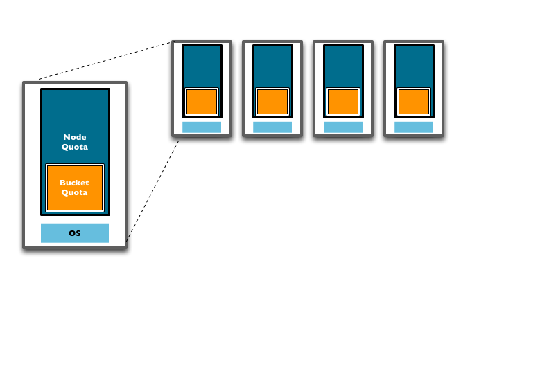

RAM quotas
RAM is allocated to Couchbase Server in the following configurable quantities: Server Quota and Bucket Quota.
- Server quota
- The Server Quota is the RAM that is allocated to the server when Couchbase Server is first installed. This sets the limit of RAM allocated by Couchbase for caching data for all buckets and is configured on a per-node basis. The Server Quota is initially configured in the first server in your cluster is configured, and the quota is identical on all nodes. For example, if you have 10 nodes and a 16GB Server Quota, there is 160GB RAM available across the cluster. If you were to add two more nodes to the cluster, the new nodes would need 16GB of free RAM, and the aggregate RAM available in the cluster would be 192GB.
- Bucket quota
- The Bucket Quota is the amount of RAM allocated to an individual bucket for caching data. Bucket Quotas are configured on a per-node basis, and is allocated out of the RAM defined by the Server Quota. For example, if you create a new bucket with a Bucket Quota of 1GB, in a 10 node cluster there would be an aggregate bucket quota of 10GB across the cluster. Adding two nodes to the cluster would extend your aggregate bucket quota to 12GB.
The following diagram shows that adding new nodes to the cluster expands the overall RAM quota and the bucket quota, increasing the amount of information that can be kept in RAM.
Bucket Quota is used by the system to determine when data should be ejected from memory. Bucket Quotas are dynamically configurable, within the Server Quota limits, and enable individual control of information cached in memory on a per bucket basis. Therefore, buckets can be configured differently depending your caching RAM allocation requirements.
Note: The Server Quota is also dynamically configurable, however, ensure that the cluster nodes
have the available RAM to support the chosen RAM quota configuration.